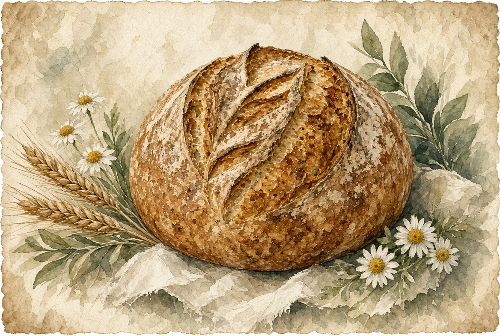

Classic sourdough
The everyday loaf. Organic flour, long ferment, crackly crust.
sourdough from the homestead
Organic sourdough, fresh-milled loaves, and cinnamon rolls from a family farm in Choestoe. Saturday at the Union County Farmers Market, and at the farmstand on Craig Gap Road.
Preview for Rachall — built from public posts and listings. Hours and flavors change weekly.

Union County Farmers Market
Booth 71 · Blairsville, GA
Season roughly June–October
Saturdays about 8 a.m.–1 p.m.
Arrive early. Cinnamon rolls and specialty loaves sell out.
1950 Craig Gap Road
Blairsville, GA 30512
Choestoe, near Richard Russell and Highway 180.
Hours vary. Check the Facebook page for the day’s open time. Signs are posted on the road.
Johnson Branch Farm is Rachall Johnson’s off-grid homestead and micro bakery, established in 2019 on land in the North Georgia mountains. The family grows food, mills grain, and bakes sourdough to sell at the farmstand and the Union County Farmers Market. Garlic, herbs, flowers, and farm eggs show up alongside the bread.
Follow the weekly menu on Instagram @johnsonbranchfarm or the Johnson Branch Farm Facebook page. Order and pay in one step on Bakesy.
The farmstand is at 1950 Craig Gap Road, Blairsville, Georgia 30512, in the Choestoe area near Richard Russell Scenic Highway and Highway 180. On market Saturdays the bread is also at booth 71 of the Union County Farmers Market in Blairsville.
Yes. Order and pay on Bakesy. The usual cutoff is Thursday at 6 p.m. so the bake can be planned. After that, leftovers are first come at the booth or the farmstand.
Recent posts describe the loaves as 100% organic, including classic sourdough and specialty flavors such as garlic, olive oil, and rosemary.
The farmstand often opens on its own schedule. Check the Johnson Branch Farm Facebook page that morning for hours and what is left.